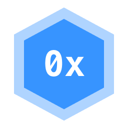
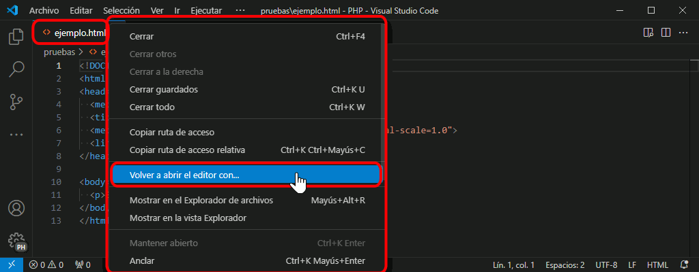
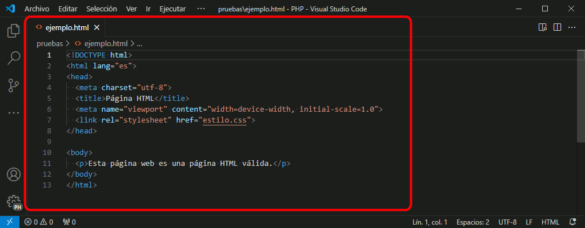

En esta lección se comenta el uso de algunas extensiones de Visual Studio Code. Aunque actualmente sólo se comenta la extensión Hex Editor.

Autor: Microsoft
Marketplace: Hex Editor
Repositorio GitHub: Hex Editor
Hex Editor es una extensión de Visual Studio Code que añade un editor hexadecimal a Visual Studio Code. Un editor hexadecimal es un editor que muestra todos los bytes de un archivo.
Para mostrar un archivo en el editor hexadecimal

El editor hexadecimal muestra en la parte izquierda el valor hexadecimal (entre 00 y FF) de los bytes que componen el archivo y en la parte derecha el carácter ASCII correspondiente a ese byte.
Tenga en cuenta que dependiendo de la codificación del fichero, un carácter puede necesitar uno o más bytes en el archivo. En el ejemplo de la captura la codificación del archivo es UTF-8.
Si hace cli en un carácter (tanto en el lado derecho como en el izquierdo), a la derecha se muestra un papel con el valor numérico en distintos formatos numéricos y el carácter en varios sistemas de condificación.
Para volver a mostrar el archivo en el editor integrado:
